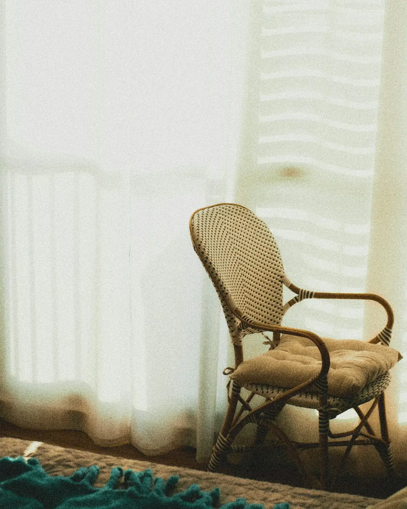
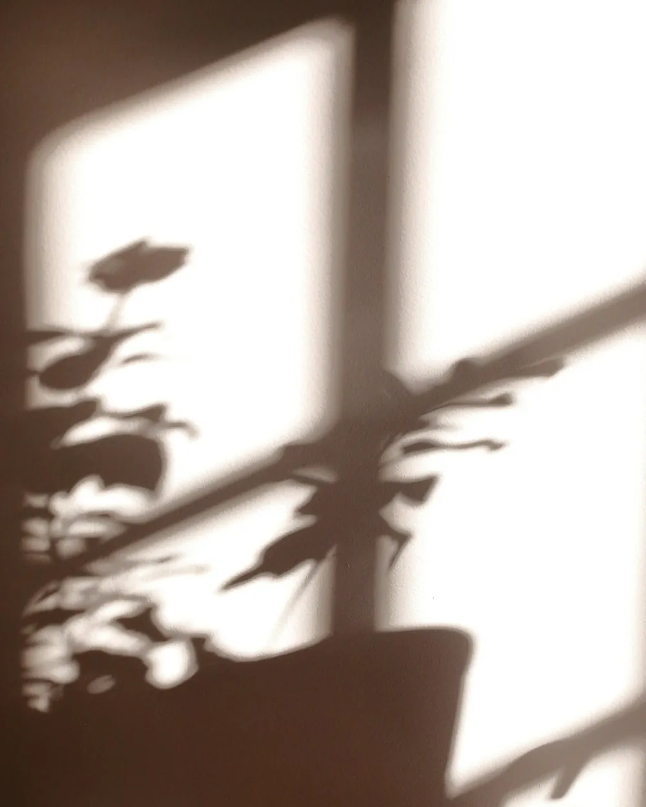
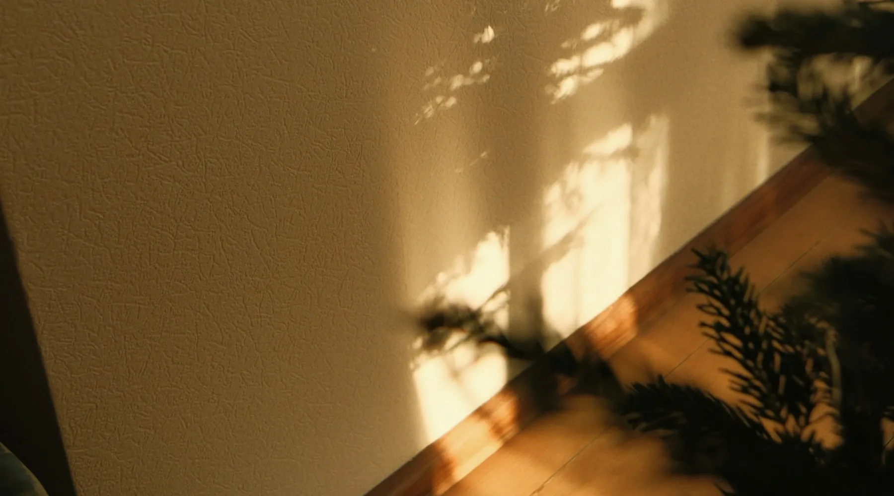

Tatiane Grassi Um espaço seguro para falar de você.
Psicoterapia com escuta atenta, sem pressa e sem julgamentos, para entender o que você sente e encontrar um jeito mais leve de seguir.


Olá, eu sou a Tatiane.
Sou psicóloga e acredito que a terapia começa quando a gente encontra um espaço seguro para falar, inclusive sobre aquilo que ainda não tem nome.
Meu trabalho é caminhar ao seu lado nesse processo: escutar com atenção, ajudar a organizar os pensamentos e construir, junto com você, formas mais gentis de lidar com o que pesa.
Escuta sem julgamento
Aqui você pode ser exatamente quem é.
No seu ritmo
Cada processo tem o seu tempo.
Sigilo e ética
O que é dito na sessão fica na sessão.
Cuidado individual
Nada de fórmula pronta: o caminho é seu.
Para os momentos em que tudo parece demais
Algumas das questões que costumam trazer as pessoas para a terapia. Se a sua não está aqui, tudo bem: ela também cabe.
Ansiedade e estresse
Pensamentos acelerados, preocupação constante e a sensação de nunca conseguir desligar.
Autoestima
Aprender a se olhar com mais respeito e menos cobrança.
Relacionamentos
Conflitos, limites, dependência emocional e o desejo de se relacionar melhor.
Luto e perdas
Um espaço para atravessar a dor da perda com acolhimento.
Mudanças e decisões
Fases de transição na carreira, na família ou na vida pessoal.
Autoconhecimento
Entender seus padrões, suas escolhas e o que realmente importa para você.

Cuidar da mente não é sinal de fraqueza. É um gesto de coragem e de carinho consigo.
Começar é mais simples do que parece
Você me manda uma mensagem
Conta um pouco do que está buscando, no seu tempo, sem precisar explicar tudo de uma vez.
Combinamos a primeira sessão
Um primeiro encontro para nos conhecermos, entender o que te trouxe e tirar suas dúvidas.
Seguimos no seu processo
Encontros regulares, com frequência combinada, em que o foco é sempre você.
Perguntas que todo mundo se faz antes de começar
Como saber se eu preciso de terapia?
Não é preciso estar em crise para procurar ajuda. Se algo tem ocupado muito espaço nos seus pensamentos, afetado seu sono, seu trabalho ou suas relações, a terapia pode ser um ótimo lugar para olhar para isso.
O que acontece na primeira sessão?
É um encontro para nos conhecermos. Você fala sobre o que te trouxe, do jeito que conseguir, e pensamos juntos em como seguir. Não existe resposta certa nem errada.
O que eu falar fica entre nós?
Sim. O sigilo é um dever previsto no Código de Ética Profissional do Psicólogo e é a base de uma relação de confiança.
Com que frequência acontecem as sessões?
Em geral, os encontros são semanais, mas a frequência é combinada de acordo com o seu momento e a sua necessidade.
Como faço para agendar?
É só me mandar uma mensagem pelo Instagram. Eu respondo com os horários disponíveis e todas as informações sobre o atendimento.
Quando chegar a hora, eu estou aqui.
Dar o primeiro passo pode ser difícil. Uma mensagem já é um começo, e você não precisa saber exatamente o que dizer.